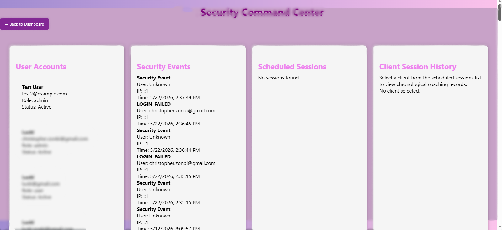
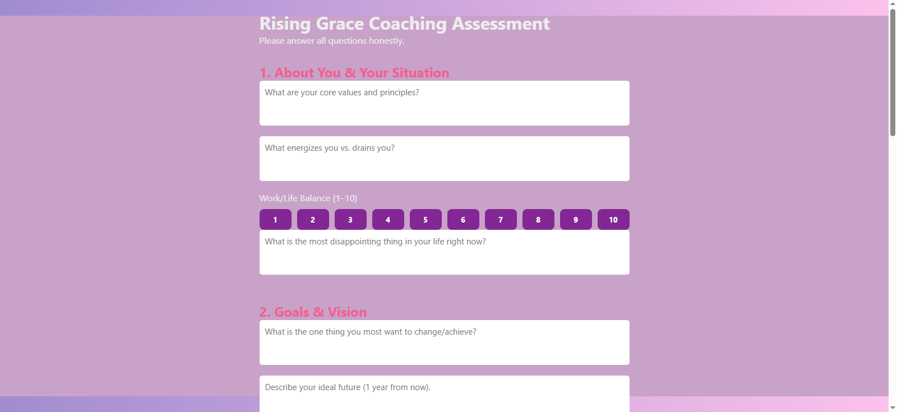
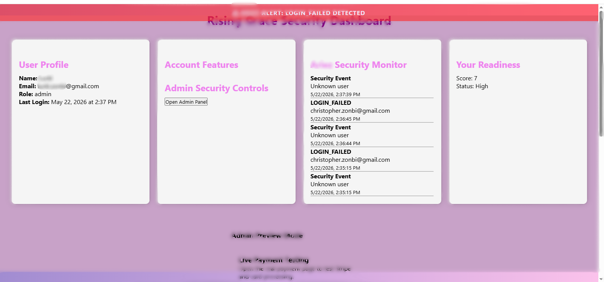

JWT Token Headers
function getToken() {
return localStorage.getItem("token");
}
function authHeaders(extra = {}) {
return {
...extra,
Authorization: `Bearer ${getToken()}`
};
}This pattern attaches the JWT to protected backend requests so admin data and user workflows stay behind authentication.

Dynamic Questionnaire Buttons
document.querySelectorAll(".scale").forEach(scale => {
const question = scale.dataset.question;
for (let i = 1; i <= 10; i++) {
const btn = document.createElement("button");
btn.innerText = i;
btn.classList.add("scale-btn");
scale.appendChild(btn);
}
});JavaScript generates scale buttons automatically, making the assessment easier to maintain and expand.

Payment Input Formatting
function formatCardNumber(value) {
const cleaned = String(value || "").replace(/\D/g, "").slice(0, 16);
return cleaned.match(/.{1,4}/g)?.join(" ") || cleaned;
}The payment page improves user experience by formatting card input before the Stripe workflow is triggered.

Security Monitoring Concept
const security = {
sessionStart: Date.now(),
securityLog: [],
logEvent(eventType, details) {
const entry = {
time: new Date().toISOString(),
event: eventType,
details: details
};
this.securityLog.push(entry);
}
};This creates a custom monitoring layer for security events, session tracking, and admin visibility.
